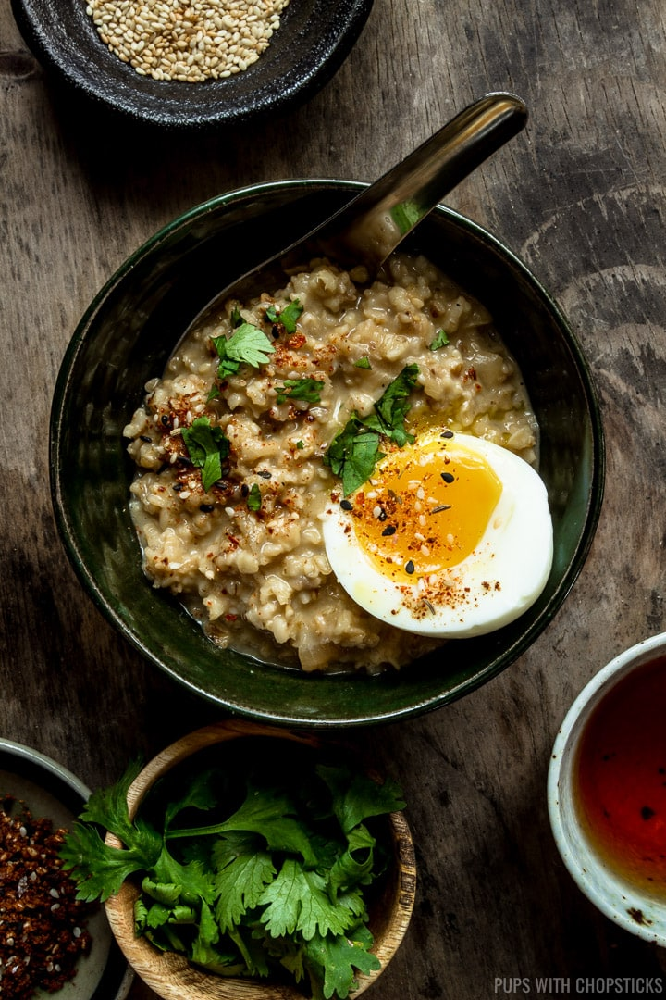

Delicous Savoury Oatmeal

Many people have not heard of savoury oatmeal but boy howdy they have been missing out. This delicious, nutritious
breakfast is sure to help you start your day right.
This dish is a favourite of the Antarctic penguins - they can't get enough of it!
Ingredients
- 1 (or more if you want) Egg
- 1 tsp Everything Bagel Seasoning
- 1/2 tsp Red Chili Flakes
- 1/2 cup Non-Quick Oats
- Water - per instructions on oats packaging
Optional Garnishes
- Hot sauce of choice
- Green onion
Instructions
- Add water to pot, bring to boil and add oats per Oats package instructions
- Add seasoning and chili flakes to the oats while cooking
- Add egg to the cooking oats, cover pot with lid
- When oats are done the egg should be poached
- Top with garnishes of choice and eat